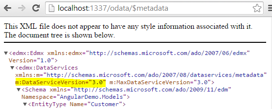

In einer typischen ASP.NET MVC oder Web Forms Anwendung kann es leicht geschehen, dass eine saubere Trennung von Daten und Layout verloren geht. Setzt man auf eine Single-Page-Anwendung, so hat man die Gelegenheit den Datenfluss zu überdenken und neu zu definieren. Es bietet sich eine Architektur nach dem Representational State Transfer (REST [1]) an. Doch hinsichtlich der einzusetzenden Protokolle, Formate und Konventionen bleiben diverse Fragen für die praktische Umsetzung von REST offen. Wie sollen etwa die Query-Parameter heißen? Welchem Format soll eine Antwort genügen? Wie lassen sich die Schnittstellen maschinenlesbar definieren? Microsoft gibt hier mit dem Open Data Protocol (OData) eine ausführliche und standardisierte Antwort.
Alle Beispiele in diesem Artikel basieren auf einer simplen Geschäftslogik mit zwei Entitäten. Die technische Grundlage bildet das Entity Framework in Version 6. Es wird der "Code First"-Ansatz verwendet. Die vom Entity Framework erzeugten Instanzen sollen auch gleichzeitig die Geschäftsobjekte repräsentieren. Bitte beachten Sie, dass die feste Verdrahtung der Geschäftslogik mit einem Objektrelationen Mapper bei einer größeren Anwendung sorgfältig geprüft werden sollte! Für eine Beispiel-Anwendung ist dies aber kein Problem. Es gibt somit die Entität "Kunde", welche eine beliebige Anzahl an Rechnungen besitzen kann.
public class Customer
{
public Customer()
{
Invoices = new List<Invoice>();
}
public int Id { get; set; }
public string FirstName { get; set; }
public string LastName { get; set; }
public string Mail { get; set; }
public DateTime DateOfBirth { get; set; }
public virtual ICollection<Invoice> Invoices { get; set; }
}
public class Invoice
{
public int Id { get; set; }
public decimal Amount { get; set; }
public int CustomerId { get; set; }
public virtual Customer Customer { get; set; }
}
public class DataContext : DbContext, IDataContext
{
public DbSet<Customer> Customers { get; set; }
public DbSet<Invoice> Invoices { get; set; }
protected override void OnModelCreating(DbModelBuilder modelBuilder)
{
modelBuilder.Configurations.Add(new InvoiceMap());
}
}Als erster Anwendungsfall soll eine Liste von Kunden angezeigt werden. Für diese häufig benötigte Aufgabe existiert sogar ein "Scaffolding" T4-Template in Visual Studio 2013. (Auswahl: "Web API 2 Controller with actions, using Entity Framework")

Visual Studio generiert dabei einen Controller, welcher per ASP.NET Web API das Erzeugen, Lesen, Ändern und Löschen (CRUD) der Entität Kunde ermöglicht. Diese atomaren Operationen entsprechen den HTTP-Verben POST, GET, PUT und DELETE. Folgender Aufruf gibt z.B. eine Liste von Kunden zurück:
GET http://example.org/api/CustomersPassend dazu zeigt der Ausschnitt aus Listing 1b die von Visual Studio generierte "GET"-Methode.
public class CustomersController : ApiController
{
private DataContext db = new DataContext();
// GET: api/Customers
public IQueryable<Customer> GetCustomers()
{
return db.Customers;
}
/* [...] */
}Dieser Web API Controller lässt sich über den $http-Service von AngularJS aufrufen. Der Service akzeptiert einen String oder ein Konfigurations-Objekt. Der Rückgabewert der Methode ist ein "promise"-Objekt, welches die Methoden "success" und "error" besitzt. Über diese beiden Methoden lassen sich Callbacks für einen erfolgreichen bzw. fehlerhaften Aufruf registrieren. Das Listings 1c zeigt den vollständigen Code, um Daten per $http zu laden.
define(['angular'], function(angular) {
return angular.module('listing1', [])
.controller('listing1Controller', [
'$scope', '$http', function($scope, $http) {
$scope.customers = [];
$http.get('/api/Customers').success(function(data) {
$scope.customers = data;
});
}
]);
});Der define Befehl wurde im letzten Artikel dieser Reihe erläutert (dotnetpro Ausgabe 01/2015). Mittels require.js werden Abhängigkeiten für das Modul definiert und angefordert. In vorliegenden Fall existiert nur eine einzige Abhängigkeit zu AngularJS. Die empfangenen Daten werden anschließend mittels ng-repeat und dem CSS-Framework Bootstrap [2] tabellarisch dargestellt (siehe Listing 1d).
<div class="table-responsive">
<table class="table table-striped">
<thead>
<tr>
<th>#</th>
<th>FirstName</th>
<th>LastName</th>
<th>Mail</th>
</tr>
</thead>
<tbody>
<tr ng-repeat="customer in customers">
<td ng-bind="customer.Id"></td>
<td ng-bind="customer.FirstName"></td>
<td ng-bind="customer.LastName"></td>
<td><a ng-href="mailto:{{customer.Mail}}" ng-bind="customer.Mail"></a></td>
</tr>
</tbody>
</table>
</div>
So wie der Web API Controller aus Listing 1b implementiert wurde, wird ein Aufruf der Ressource ohne weitere Parameter eine Liste aller Entitäten zurückgeben. Es wird hierbei tatsächlich der gesamte Inhalt der Datenbank-Tabelle verwendet! Je mehr Daten vorhanden sind, desto unbrauchbarer wird dieser Ansatz. Es fehlt eine seitenweise Einschränkung der Ergebnismenge. An diesem Punkt stellt sich die Frage, wie die notwendigen Query-Parameter in der URL benannt werden sollten. Man könnte etwa "page" und "pageSize" verwenden. Man könnte sich auch von LINQ inspirieren lassen und auf "skip" und "take" setzen. Man könnte aber auch einen HTTP Range-Header [3] setzen, um die Menge an Entitäten einzuschränken (siehe [4]).
Die Entscheidungsmatrix lässt sich beliebig weiterführen und auf weitere Probleme ausweiten. Klärungsbedarf innerhalb eines Teams ist quasi vorprogrammiert. Eine zähe Entscheidungsfindung lässt sich gänzlich vermeiden, wenn man auf das OData Protokoll setzt. OData gibt die Namen der Parameter mit einer Sammlung von Konventionen exakt vor, so dass die Verwendung eindeutig wird [5]. Die notwendigen Parameter heißen $top und $skip. $top gibt n Elemente der Ergebnismenge zurück. $skip überspringt n Elemente in der Ergebnismenge. Möchte man z.B. die Kunden mit der fortlaufenden Nummer 3 bis 7 abrufen, so verwendet man folgenden Aufruf:
GET http://example.org/odata/Customers?$top=5&$skip=2Weitere Query-Parameter sind unter anderem $filter, $orderby, $count oder $search. Der bestehende Web API Controller kann durch ein paar Änderungen um die Funktionalität von OData ergänzt werden. Der Controller muss hierzu vom "ODataController" erben. Weiterhin ist es notwendig, dass die Funktionalität per [EnableQuery] explizit freigeschaltet wird.
public class CustomersController : ODataController
{
private DataContext db = new DataContext();
// GET: odata/Customers
[EnableQuery]
public IQueryable<Customer> GetCustomers()
{
return db.Customers;
}
/* [...] */
}Anschließend ist es erforderlich die Klasse WebApiConfig zu konfigurieren. Mittels config.Routes.MapODataRoute legt man fest, unter welcher Adresse der "root" des OData Service zu finden ist. Alle Beispiele von Microsoft verwenden die Adresse "/odata", welche sich von der Adresse "/api" für normale ASP.NET Web API Aufrufe unterscheidet.
public static class WebApiConfig
{
public static void Register(HttpConfiguration config)
{
ODataConventionModelBuilder builder = new ODataConventionModelBuilder();
builder.EntitySet<Customer>("Customers");
builder.EntitySet<Invoice>("Invoices");
config.Routes.MapODataServiceRoute("odata", "odata", builder.GetEdmModel());
}
}Der Controller unterstützt nun eine seitenweise Ausgabe, Sortierung und Filterung. Diese Fähigkeiten direkt mit AngularJS umzusetzen wäre ein großer Aufwand. Es bietet sich an, ein fertiges Tabellen-Control ("Grid") zu verwenden. Auf dem Markt finden sich eine Reihe von freien und proprietären Grids, welche mit AngularJS kompatibel sind. Ein bekanntes und weit verbreitetes Framework ist Kendo UI von Telerik [6]. Listing 2c und Listing 2d zeigen die Verwendung des Kendo UI Grids im Zusammenspiel mit AngularJS und OData.
define(['angular', 'kendo'], function(angular) {
return angular.module('listing2', ['kendo.directives'])
.controller('listing2Controller', [
'$scope', function($scope) {
$scope.customerDataSource = new kendo.data.DataSource({
type: 'odata',
transport: {
read: {
type: 'GET',
url: '/odata/Customers',
dataType: 'json'
}
},
schema: {
data: function (data) { return data.value; },
total: function (data) { return data['odata.count']; },
model: {
id: 'Id',
fields: {
Id: { type: 'number' },
FirstName: { type: 'string' },
LastName: { type: 'string' },
Mail: { type: 'string' },
DateOfBirth: { type: 'date' }
}
}
},
serverPaging: true,
serverSorting: true,
serverFiltering: true,
pageSize: 10
});
}
]);
});<div kendo-grid
k-data-source="customerDataSource"
k-sortable="true"
k-pageable="true"
k-columns="[
{ field: 'Id' },
{ field: 'FirstName', title: 'Vorname' },
{ field: 'LastName', title: 'Nachname' },
{ field: 'Mail' },
{ field: 'DateOfBirth', title: 'Geburtstag', format: '{0:dd.MM.yyyy}' }]"></div>
Im Kern ist Kendo UI ein Framework, welches aus diversen jQuery-Plugins besteht. Normalerweise ist die Integration von jQuery-Plugins in AngularJS mit Aufwand verbunden. Doch der Hersteller liefert über das AngularJS Modul kendo.directives gleich passende Direktiven für AngularJS mit. Die Datenquelle "customerDataSource" beschreibt das Modell und die Fähigkeiten des OData Services im Detail. Um die Übersichtlichkeit zu erhöhen, wurde die Datenquelle nicht im Markup konfiguriert. Man könnte übrigens in einem künftigen Refactoring-Schritt die Datenquelle in einen eigenen AngularJS Service auslagern.
In einer Single Page Anwendung findet man üblicherweise viel Geschäftslogik direkt auf der Client-Seite. Doch auch der Server behält seine Bedeutung für die Persistenz der Daten und das Anstoßen von Prozessen. Die Auswirkungen des Technologiewechsels zwischen Client und Server möchte man natürlich möglichst gering halten. Betrachtet man das Listing 1c erneut, so fallen unter diesem Aspekt einige beanstandbare Tatsachen auf. Zunächst muss man genau wissen, unter welcher Adresse die Entitäten vom Typ Kunde zu finden sind. Das klingt trivial, aber je nach Geschmack des Entwicklers kann dies z.B. "/api/Customer" oder "/api/Customers" sein. Die Antwort des Web API Controllers ist zudem ein pures JSON-Dokument (siehe Listing 3).
[
{
"Id": 1,
"FirstName": "James",
"LastName": "Red",
"Mail": "0@example.com",
"DateOfBirth": "1990-11-30T12:04:53.853",
"Invoices": []
},
{ ...}
]Das Geburtsdatum war in der C#-Welt noch vom Typ DateTime. In JSON wird das Datum als String repräsentiert da kein äquivalenter Datentyp existiert. Das spätere Property am JavaScript-Objekt bleibt leider ein simpler String. Ebenso existiert ein Property namens "Invoices". Ob sich darin wirklich Entitäten vom Typ "Rechnung" befinden und wie diese exakt beschaffen sind, ist für Nutzer der API reine Spekulation. Es fehlen offensichtlich Metainformationen, welche die API genauer beschreiben.
Laut Spezifikation sollte ein OData Service sein Modell im "Common Schema Definition Language" (CSDL) Format offen legen. In jenem CSDL-Dokument ist ein "Entity Data Model" (EDM) beschrieben [7]. Das "Entity Data Model" ist ein alter Bekannter, welcher seit jeher die konzeptionelle Grundlage des Entity Frameworks bildet. Die vorgestellte Geschäftslogik verwendet bereits das Entity Framework und besitzt damit bereits ein EDM. Es liegt nahe das bereits existierende Code-First-Modell aus dem Entity Framework wieder zu verwenden. Auf dem zweiten Blick ist dies aber keine gute Idee. Durch die Wiederverwendung der EDM würde man das gesamte Datenbanklayout veröffentlichen. Ebenso könnte man den Service nicht mehr um zusätzliche Operationen ergänzen. Es ergibt sich daher die Notwendigkeit, ein zweites, öffentliches Modell zu erstellen. Hierfür verwendet man den ODataConventionModelBuilder, welcher in Listing 2b bereits eingesetzt wurde. Dort sieht man eine Entscheidung für das Plural-S ("Customers" und "Invoices"), welche nun per Metadaten nach außen kommuniziert werden kann. Die Adresse eines Metadaten-Dokuments ist immer gleich. Die Adresse setzt sich zusammen aus der Root-Adresse des OData Service und dem Suffix "$metadata":
GET http://example.org/odata/$metadataNun gilt es, mithilfe von Metadaten und URL-Konventionen die Entwicklung eigener Funktionalitäten zu vereinfachen. Weder die Low-Level API von $http, noch das Angular-Modul ngResource sind dafür gut geeignet. Man benötigt ein Framework, welches die Komplexität von OData auf ein verständliches Niveau abstrahiert.
Die gesuchte Abstraktion bietet das Open-Source Framework "Breeze.js" an [8]. Für die OData Integration wird wiederum auf das Framework "data.js" [9] zurück gegriffen. Als ebenbürtiges Framework zu Breeze sollte "JayData" nicht unerwähnt bleiben [10], welches ebenso auf "data.js" setzt. In diesem Artikel wird nur Breeze.js näher vorgestellt, da die Unterstützung von AMD/require.js sowie AngularJS-Modulen besonders gut gelungen ist. Breeze.js verwendet zudem den internen Promise-Service $q von AngularJS, was Unit-Tests entscheidend vereinfacht. .NET Entwicklern wird Breeze.js sehr vertraut vorkommen. Das Framework ist stark vom Entity Framework und LINQ inspiriert. Das verwendete Modell ergibt sich stets aus den Metadaten. Konzepte wie "Change Tracking", das Unit of Work Pattern ("Batched saves"), "Navigation Properties" oder einen internen Speicher für Entitäten ("Client-side caching") sind aus dem Entity Framework bestens bekannt. Listing 4 zeigt, wie man alle Kunden mit dem Vornamen "James" komfortabel abfragt.
define(['angular', 'breeze.angular'], function(angular) {
return angular.module('listing4', ['breeze.angular'])
.controller('listing4Controller', [
'$scope', 'breeze', function($scope, breeze) {
breeze.config.initializeAdapterInstance('dataService', 'webApiOData', true);
var manager = new breeze.EntityManager('/odata');
new breeze.EntityQuery()
.using(manager)
.from("Customers")
.orderBy("FirstName")
.where("FirstName", "eq", "Jack")
.execute()
.then(function(data) {
$scope.customers = data.results;
});
}
]);
});Ein interessantes Feature ist die Unterstützung von Navigation-Properties mittels "$expand". Folgendes Beispiel demonstriert, wie man den Kunden Nr. 42 und gleichzeitig all seine Rechnungen mit einem Aufruf lädt:
new breeze.EntityQuery()
.using(manager)
.from("Customers")
.where("Id", "eq", 42)
.expand("Invoices")
.execute()
.then(function(data) {
$scope.customer = data.results.length ? data.results[0] : null;
});Die Antwort der Abfrage enthält nun einen Kunden mit all seinen Rechnungen, welche im Property "Invoices" zu finden sind. Es muss leider angemerkt werden, dass bei der Verwendung von Navigation-Properties eine kleine Hürde zu meistern ist. Das vom Web API OData Service generierte Metadaten-Dokument ist hinsichtlich der Navigation-Properties nicht standardkonform und damit fehlerhaft. Obwohl der Bug bestens bekannt ist, sitzt Microsoft das Problem anscheinend einfach aus. Zum Glück gibt es mehrere Lösungen aus der Community, welche unter [11] beschrieben sind. Auf der Heft-CD finden Sie zwei dieser Workarounds. Die eine Lösung verwendet den "EdmBuilder" (Nuget-Paket "Breeze.EdmBuilder"), welcher den ODataConventionModelBuilder ersetzt. Die andere Lösung verwendet eine vorab generierte JavaScript-Datei, welche alle Metadaten beinhaltet. Diese Technik hinter der generierten JavaScript-Datei wird im dritten Teil dieses Artikels noch einmal ausführlich vorgestellt.
Bislang wurde nicht erwähnt, dass OData auch alle weiteren CRUD-Operationen unterstützt. Mittels des HTTP-Verbs "PUT" kann man alle Werte einer Entität neu übertragen. Eine zweckmäßigere Verarbeitung ermöglicht "PATCH". Mithilfe dieses HTTP-Verbs ist es möglich, nur die tatsächlich geänderten Werte einer Entität an den Server zu senden. Der Server kann so die Entität entsprechend differenziert updaten. Sie finden beide Methoden vollständig implementiert auf der Heft-CD. Auf diese CRUD-Operationen soll aber nicht näher eingegangen werden, da ein simpler "PUT"- bzw. "PATCH"-Request auf eine Ressource prinzipiell kein sauberer Stil ist. Sendet man einfach nur neue Werte für eine Entität, so geht das Wissen über die eigentliche Intention verloren. Beispielsweise soll die Software einen Bestellprozess abbilden. Eine Bestellung wird aber nicht nur aus der Erstellung und Verknüpfung einer Rechnung bestehen. Die Manipulation einer oder mehrere Ressourcen per CRUD fällt damit aus. Abhilfe schaffen eigene Methoden, welche dem auszuführenden Prozess Bedeutung verleihen und die Komplexität vor dem Client verbergen. Das Listing 6a skizziert die Verwendung jener OData Actions.
public class CustomersController : ODataController
{
[HttpPost]
public IHttpActionResult Purchase([FromODataUri] int key, ODataActionParameters parameters)
{
int amount = (int)parameters["AmountOfShoes"];
var customer = db.Customers.First(c => c.Id == key);
var invoices = CustomerService.PurchaseShoesAndSendMail(customer, amount);
IList<Invoice> invoices = CustomerService.PurchaseShoesAndSendMail(amount);
if (!invoices.Any())
{
return NotFound();
}
return Ok(invoices);
}
}Auch diese Operation lässt sich in den Metadaten hinterlegen:
public static class WebApiConfig
{
public static void Register(HttpConfiguration config)
{
/* [...] */
ActionConfiguration purchase = builder.Entity<Customer>().Action("Purchase");
purchase.Parameter<int>("AmountOfShoes");
purchase.ReturnsFromEntitySet<Invoice>("Invoices");
/* [...] */
}
}In einer perfekten Welt würde Breeze.js die zusätzlichen Informationen auswerten und eine entsprechende Methode der JavaScript-Entität hinzufügen. Leider ist dieses Feature in Breeze.js nicht implementiert. JayData unterstützt OData Actions hingegen [12]. Es bleibt aber der Rückgriff auf $http, wobei natürlich die Metadaten nicht berücksichtigt werden:
$http.post("/odata/Customers(42)/Purchase", {
AmountOfShoes: 2
})
.success(function(data) {
$scope.purchased = data.value;
});
});OData sollte im Werkzeugkasten eines AngularJS-Entwicklers nicht fehlen. Denn bei der Integration von Grids oder Charts spart man viel Zeit. Auch die Interaktion mit der serverseitigen Geschäftslogik kann durch OData und einem Framework wie Breeze.js oder JayData entscheidend vereinfacht werden. Dank der Standardisierung von OData v4 sollte auch das babylonische Versionswirrwarr bald ein Ende haben. Eine breite Unterstützung von OData v4 durch Client-Bibliotheken wird kommen. Bis dahin ist man auch mit Version 3 gut beraten, zumal eine serverseitige Migration nicht allzu stark ins Gewicht fällt.
In der nächsten Ausgabe der Artikelreihe zu AngularJs und ASP.NET wird an dieser Stelle angeknüpft. Denn bislang wurde weder auf dem Server noch auf dem Client die Software ordentlich getestet. Dies gilt es in der dotnetpro 03/2015 nachzuholen! Erfahren Sie unter anderem, wie Unit-Tests in AngularJS funktionieren und wie damit die Korrektheit der Breeze-Queries bewiesen werden kann.
Das OData-Protokoll in der Version 4 wurde bereits im Frühjahr 2014 als OASIS Standard bestätigt. Dennoch vollzieht sich die Adaption der neuesten Version bislang noch schleppend. Grund dafür mag sein, dass Microsoft in den letzten Jahren mehrere miteinander inkompatible OData-Spezifikationen veröffentlicht hat. Zu allem Überfluss generiert die Web API Implementierung von OData fehlerhafte Metadaten, was den Sinn einer Spezifikation konterkariert. Die WCF Implementierung ist hingegen fehlerfrei. Auch in Visual Studio hat zum Zeitpunkt des Schreibens noch kein "Scaffolding"-Template für OData v4 existiert. Der Menüpunkt "Web API 2 OData Controller with actions, using Entity Framework" erzeugt Code für die Version 3 des OData Protokolls. Verwendet man das Template, so werden ebenso die Nuget-Pakete für das alte Protokoll eingebunden - was zu reichlich Verwirrung führen kann! Da hätte man von Microsoft wirklich mehr erwarten können.
Den Autoren von Client-Bibliotheken und damit auch den Anwendern wurde das Leben so unnötig schwer gemacht. Das Framework data.js, welches die Grundlage von Breeze.js ist, hat noch keine stabile Unterstützung von OData v4. Immerhin hat Telerik mit dem "November 2014" Release des Kendo UI Framweworks jüngst Support für die neueste Version nachgeliefert. Um Inkompatibilitäten zu vermeiden, basieren alle Beispiele in diesem Artikel auf der gut etablierten Version 3 von OData. Sollten Sie sich nicht sicher sein, welche Version ein OData Service implementiert, so lässt sich dies über das Metadaten-Dokument herausfinden.

Bis auf Kendo UI Professional lassen sich alle hier vorstellten JavaScript-Frameworks per Nuget einbinden. Den vollständigen Quelltext aller Listings finden Sie als Download bzw. auf der Heft-CD.
Johannes Hoppe ist selbstständiger Webdesigner, Softwareentwickler und IT-Berater.
Er realisiert seit mehr als 10 Jahren Software-Projekte für das Web und entwickelt moderne Portale auf Basis von ASP.NET MVC und JavaScript. Seine Arbeit konzentriert sich auf SinglePage-Technologien und NoSQL-Datenbanken. Er unterrichtet als Lehrbeauftragter und schreibt über seine Vorlesungen, Trainings und Vorträge in seinem Blog. (http://blog.johanneshoppe.de/)
[1] Roy Thomas Fielding - REST: http://www.ics.uci.edu/~fielding/pubs/dissertation/top.htm
[2] Bootstrap: http://getbootstrap.com/
[3] HTTP/1.1 (RFC 2616) Abschnitt 14.35.2 - Range Retrieval Requests: http://www.w3.org/Protocols/rfc2616/rfc2616-sec14.html#sec14.35.2
[4] John Gietzen - Range header: http://otac0n.com/blog/2012/11/21/range-header-i-choose-you.html
[5] OData Version 4.0 - URL Conventions - http://docs.oasis-open.org/odata/odata/v4.0/odata-v4.0-part2-url-conventions.html
[6] Kendo UI - http://www.telerik.com/kendo-ui1
[7] OData Version 4.0 - CSDL: http://docs.oasis-open.org/odata/odata/v4.0/odata-v4.0-part3-csdl.html
[8] Breeze.js - http://www.breezejs.com/
[9] Data.js - http://datajs.codeplex.com/
[10] JayData - http://jaydata.org/
[11] Breeze.js - OData Services: http://www.getbreezenow.com/documentation/odata-server
[12] Calling OData actions and service operations with JayData: http://jaydata.org/blog/calling-odata-actions-and-service-operations-with-jaydata